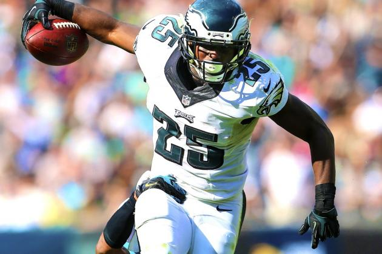

Latest NFL News
Steelers Reportedly Want to Part Ways with Polamalu
Wednesday, March 4
Polamalu was once among the most dominant defensive players in football, but with his skills continuing to decline at a rapid rate, the Steelers appear ready to move on.
According to CBS Pittsburgh, Ed Bouchette of the Pittsburgh Post-Gazette revealed his expectations regarding the 33-year-old defensive back's future on 93.7 The Fan's The Cook and Poni Show.
"That is the elephant in the room," Bouchette said. "I expect him not to be here by some means. The Steelers are hoping he would retire, but I don't know if he is going to."
Regardless of Polamalu's decision, Ian Rapoport of NFL Network is confident the former USC standout has played his last game for the Steelers, according to NFL.com's Marc Sessler:
Three Teams that can use Troy Palomalu's Services
- Oakland Raiders
- Jacksonville Jaguares
- New York Jetts
Bills Stealing LeSean McCoy From Eagles Would Be Huge Coup for Buffalo
There's been quite a bit of turmoil in Buffalo these past few months, with Doug Marrone's abrupt departure as head coach and Rex Ryan's arrival as his replacement. Now, there's been yet another stunning development in Western New York. This time, it's something that could land the entire Buffalo front office in hot water with the law...Because the Bills may have just committed highway robbery.According to ESPN's Adam Schefter, the Bills and Philadelphia Eagles are set to pull the trigger on a blockbuster trade that would swap Eagles running back LeSean McCoy and Bills linebacker Kiko Alonso:
Before we go any further, it's worth noting that McCoy's representation, super agent Drew Rosenhaus, has denied that his client is about to change ZIP codes: However, Ian Rapoport of NFL.com had additional info on this trade that isn't but sure looks like it is: It's a stunning end to McCoy's time with the Eagles.This time a year ago, McCoy was still basking in the adulation from his 2013 season. In head coach Chip Kelly's first year in Philly, McCoy led the NFL with 1,607 rushing yards. McCoy found the end zone 11 times and brought home Offensive Player of the Year honors. On the surface, McCoy's 1,319 rushing yards in 2014 don't look too bad. However, McCoy's yards per carry were down almost a full yard from the season prior. His usage in the passing game plummeted from 52 catches in 2013 to only 28 last year. After those 11 total scores in 2013, "Shady" found the end zone only five times in 2014. He didn't catch a touchdown pass for the first time since his rookie season.
Mind you, this isn't to say Kiko Alonso is anything less than a fine young linebacker. The former Oregon star (a coincidence, I'm sure) more than justified the faith the Bills showed by drafting him in the 2013 second round. Alonso was outstanding as a rookie. He racked up 159 total tackles (third in the NFL), ranked second among linebackers with five interceptions and was a top-10 inside linebacker, per Pro Football Focus.
Giving up a young, productive player who is still on his rookie contract is a major sacrifice. However, it's one the Bills can afford to make for multiple reasons. First, for as well as Alonso played in 2013, a torn ACL wiped out his entire 2014 season. With Alonso on the sideline, rookie Preston Brown was thrust into the starting lineup. And just like Alonso the year before, Brown shined for the Bills' fourth-ranked defense. With Buffalo moving to the 3-4 under Ryan, one of the talented young trio of Alonso, Brown and Nigel Bradham was likely looking at a reserve role inside. This trade clears the logjam for a Bills defense that was elite without Alonso just last year.
Then there's the matter of the Buffalo running backs. The Bills struggled to run the ball a year ago. Fred Jackson led the team with a paltry 525 rushing yards in 2014—the same Fred Jackson who averaged only 3.7 yards a carry. Oh, and he just turned 34. C.J. Spiller missed nearly half of last season, averaged a career-low 3.8 yards per tote and hits free agency next week. Bryce Brown is a viable NFL starter only in the fever dreams of fantasy football owners enamored with his glimpses of game-breaking ability. Given Ryan's propensity for running the ball while he coached the New York Jets, and the Bills' gaping maw of a hole at quarterback, Buffalo needed to significantly upgrade its backfield. And McCoy is most certainly a significant upgrade.